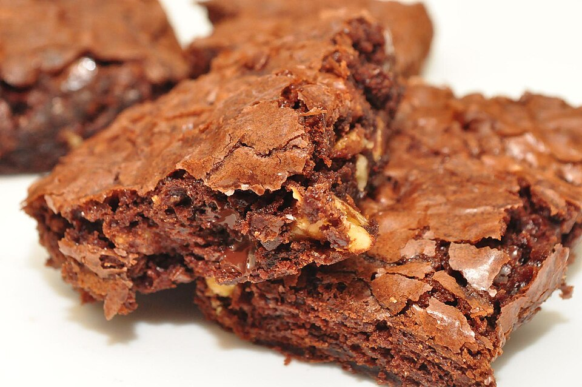

Homepage
Walnut Brownies

Description
Brownies are a uniquely american baked desert bar, invented for women to eat for the Chicago World's Fair. Originally with walnuts and an apricot glaze. It only took a few years before the accoutrement were dropped in favor of the simple brownie.
While not uniquely southern itself, the addition of nuts such as walnuts and pecans are common in the southern US. Adding walnuts back into the brownie recipe brings some southern flair.
Ingredients
-
1/2 cup all-purpose flour
-
1/8 teaspoon baking powder
-
1/8 teaspoon salt
-
1 cup white sugar
-
1/2 cup butter, softened
-
2 eggs
-
2 (1 ounce) squares unsweetened baking chocolate, melted
-
1/2 teaspoon vanilla extract
-
1 cup coarsely chopped walnuts
Instructions
-
Preheat oven to 325 degrees F (165 degrees C). Grease an 8x8-inch square pan.
-
Sift flour, baking powder, and salt together in a bowl.
-
Beat sugar and butter together in a large bowl with an electric mixer until light and fluffy. Beat in eggs until smooth batter forms; beat in chocolate and vanilla extract. Stir flour mixture in just until incorporated; fold in walnuts. Spread batter into prepared square pan.
-
Bake in preheated oven until top is dry and edges have started to pull away from the sides of the pan, 40 to 45 minutes. Cool completely in square pan, about 30 minutes; cut into 9 squares.